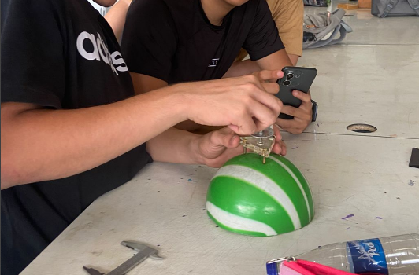
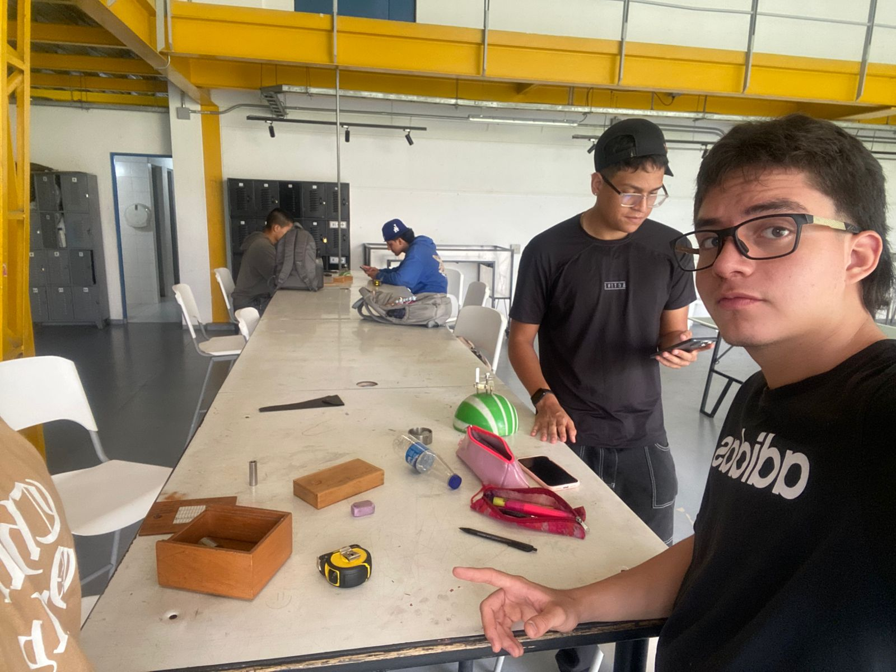

Medición del diámetro de una esfera blanca usando un micrómetro de tornillo para alta precisión.
Medición de distancia con cinta métrica sobre la mesa de trabajo.
Uso de esferometro para medir el diámetro de una semiesfera verde.
Medición de esfera blanca con micrómetro y registro de datos en cuaderno cuadriculado.

Trabajo colaborativo midiendo una semiesfera verde con un esferometro.
Medición de una pequeña esfera transparente usando un micrómetro.

Vista general del laboratorio con estudiantes y los instrumentos de medición utilizados.